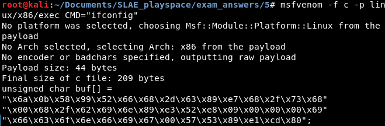
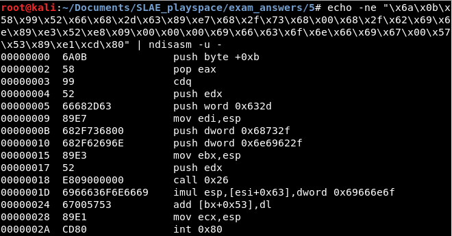
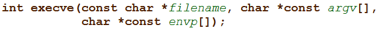

This is an analysis of Metasploit's linux/x86/exec shellcode, generated using the following command:
msfvenom -f c -p linux/x86/exec CMD="ifconfig"As seen in the image, the following shellcode was generated:
"\x6a\x0b\x58\x99\x52\x66\x68\x2d\x63\x89\xe7\x68\x2f\x73\x68\x00\x68\x2f\x62\x69\x6e\x89\xe3\x52\xe8\x09\x00\x00\x00\x69\x66\x63\x6f\x6e\x66\x69\x67\x00\x57\x53\x89\xe1\xcd\x80"
This shellcode can be converted to readable i86 assembly using
ndisasm:
The code in its entirety (comments mine) can be seen below:
00000000 6A0B push byte +0xb
00000002 58 pop eax ; eax = syscall 11
00000003 99 cdq
00000004 52 push edx
00000005 66682D63 push word 0x632d ; "c-"
00000009 89E7 mov edi,esp ; edi = pointer to -c
0000000B 682F736800 push dword 0x68732f ; hs/
00000010 682F62696E push dword 0x6e69622f ; nib/
00000015 89E3 mov ebx,esp ; ebx = pointer to /bin/sh
00000017 52 push edx
00000018 E809000000 call 0x26
0000001D 6966636F6E6669 imul esp,[esi+0x63],dword 0x69666e6f ; "ifconfi
00000024 67005753 add [bx+0x53],dl ; g\0" and PUSH EDI PUSH EBX
00000028 89E1 mov ecx,esp ; arguments = ['/bin/sh', '-c', 'ifconfig']
0000002A CD80 int 0x80 ; invoke execveFrom a high level the code merely runs the command "/bin/sh -c ifconfig" by invoking
execve. Let's dig into it a little bit and see how it works.
First, the code loads EAX with 11, the Linux syscall number for the
execve function. This function can be used to execute an arbitrary program. It has the following signature:
As this is a Linux system call, the "filename" parameter shall be stored in EBX, the "argv" parameter in ECX, and the "envp" parameter in EDX.
At address 0004, the code begins performing a series of stack and control flow manipulations that will eventually satisfy the rest of the above parameters. It first pushes the null-terminated string "-c" onto the stack and saves a pointer to it in the EDI register. It then pushes a null-terminated string "/bin/sh" onto the stack and saves a pointer to it in EBX, fulfilling the "filename" parameter in the above function.
The code then uses a traditional call-over-inline-string technique to implicitly push a pointer to a string reading "ifconfig" onto the stack. This will be used as an argument to the "/bin/sh" command that is executed. Note that ndisasm interprets this inline string (addresses 001D to 0026) as a series of instructions including imul. Only the hex values reveal that these bytes contain ASCII characters.
ndisasm's misinterpretation of these strings hides two key instructions at the address 0026, which is where the instruction pointer ends up after the "call" instruction. These instructions are 0x57 and 0x53, or "PUSH EDI" and "PUSH EBX". These instructions add two more arguments to the "ifconfig" argument that is already on the stack. These arguments are "/bin/sh" and "-c".
All of the parameters for the syscall are now prepared, and it is triggered with an interrupt, executing the desired command.
---
This blog post has been created for completing the requirements of the SecurityTube Linux Assembly Expert certification:
http://securitytube-training.com/online-courses/securitytube-linux-assembly-expert/
Student ID: SLAE - 1353